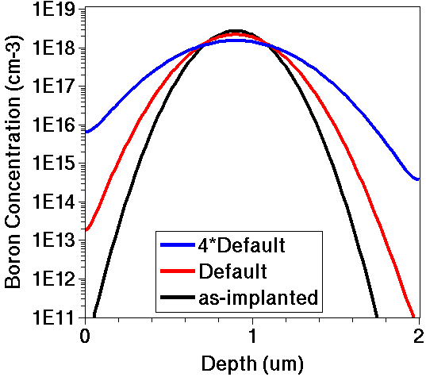
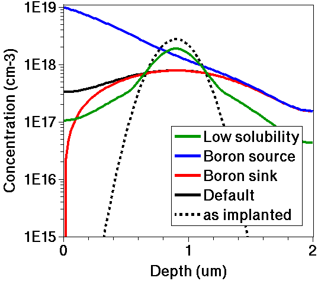

Sentaurus Process
4. Defining Models and Specifying Parameters
4.1 Introducing the Parameter Database Browser
4.2 Changing Parameters in the Command File
4.3 Example: Changing Dopant Diffusivity
4.4 Assignment
Objectives
- To show how to look up default models and parameter values.
- To show how models and parameter values are selected in a command file.
- To demonstrate model and parameter specification.
The files discussed in this section are part of the Sentaurus Workbench project Models. The complete project can be investigated from within Sentaurus Workbench in the directory Applications_Library/GettingStarted/sprocess/Models.
4.1 Introducing the Parameter Database Browser
If the physical models and parameter values are not specified explicitly, Sentaurus Process uses the default models and parameters. These defaults are stored in the parameter database of Sentaurus Process, which consists of a hierarchical directory that is part of the TCAD release. The standard location is:
$STROOT/tcad/$STRELEASE/lib/score/Params/
The Parameter Database (PDB) Browser is a graphical representation of the parameter database that is used to view, evaluate, and edit parameters.
To start the PDB Browser, enter:
> sprocess -p
{kind=link}
Figure 1. Parameter Database Browser. (Click image for full-size view.)
In Figure 1, for example, the default expression of the segregation coefficient Segregation for arsenic at Oxide_Silicon interfaces is shown. The value is given as:
[Arr 0.75 -0.336]
Arr is a Tcl procedure, which constructs an Arrhenius law expression. The first argument is the pre-exponential factor, and the second one is the activation energy (see the Tool Command Language module for an introduction).
In Figure 1, the lower-right pane plots the temperature dependency of the segregation coefficient.
In principle, the entries in the parameter database can be edited directly in the PDB Browser. However, the parameter database distributed with the TCAD release is typically write protected.
To edit the parameter database directly, copy the entire directory structure $STROOT/tcad/$STRELEASE/lib/score to a user-writable location and set up the environment variable SCHOME, which points to the new location.
For example, for the tcsh shell, enter:
tcsh> cp -R $STROOT/tcad/$STRELEASE/lib/score
/remote/users1/<your_profile>/score
tcsh> setenv SCHOME /remote/users1/<your_profile>/score
Choose Tools > Edit to open the corresponding
file from the PDB Browser, here,
/remote/users1/<your_profile>/score/Params/Oxide_Silicon/Arsenic
in the text editor. The line corresponding to the segregation coefficient is:
array set $Base {Segregation {Double {[Arr 0.75 -0.336]}}}
All entries must start with the string array set $Base. Then follows the parameter name, here Segregation, and the parameter type. For example, numeric parameters have the type Double; logical flags have the type Boolean. The last part is the value (or expression) of the parameter. Note that each entry and subentry is enclosed in braces.
Changing parameter values directly in the PDB Browser can be a good way to ensure the use of a consistent set of parameters for all projects. However, different projects require different settings, and such global changes might cause problems. In this case, other methods such as those discussed in the next sections are more appropriate.
4.2 Changing Parameters in the Command File
To change parameters for a specific simulation run, use the command:
pdbSet Oxide_Silicon Vacancy Ksurf {[Arrhenius 1e3 0.1]}
Here, the surface recombination rate Ksurf for vacancies at Oxide_Silicon interfaces is set to an Arrhenius law:
\[K_{surf} = A e^{-{E}/{kT}} \]
where \(A\) is the pre-exponential factor (1000 cm/s), and \(E\) is the activation energy (0.1 eV).
Two sets of delimiters are used. The brackets [] identify a Tcl expression, and the braces {} suppress the evaluation of the expression, such that Ksurf is set to the string [Arrhenius 1e3 0.1] instead of the value to which the string evaluates. The evaluation can also be suppressed by masking the brackets with backslashes. This notation must be used if the expression contains variables that should be expanded.
For example:
set E0 0.1 ;# Activation energy (eV) set A0 1e3 ;# Surface recombination rate (cm/s) pdbSet Oxide_Silicon Vacancy Ksurf "\[Arrhenius $A0 $E0\]"
The difference between an immediate and a suppressed evaluation of the expression can be seen when the value of Ksurf is retrieved.
To retrieve the value of a parameter, use:
pdbDelayDouble Oxide_Silicon Vacancy Ksurf ---> [expr [Arrhenius 1e3 0.1]] pdbGet Oxide_Silicon Vacancy Ksurf ---> 20.8986
where the pdbDelayDouble command retrieves the value without evaluating it (if it is an expression), and pdbGet evaluates it for the current conditions (that is, at the current processing temperature).
The following example shows how the evaluation depends on the current conditions:
pdbSet Oxide_Silicon Vacancy Ksurf {[ Arrhenius 1e3 0.1]}
line x location=0.0 spacing=0.2<um> tag=SiTop
line x location=2.0<um> spacing=0.2<um> tag=SiBottom
region Silicon xlo=SiTop xhi=SiBottom
init concentration=1.0e15<cm-3> field=Boron wafer.orient=100
puts [pdbGet Oxide_Silicon Vacancy Ksurf]
---> 20.8986
diffuse temperature=900<C> time=40<min>
puts [pdbGet Oxide_Silicon Vacancy Ksurf]
---> 371.887
The first call of pdbGet evaluates the Arrhenius expression at 300 K and the second call of pdbGet, at 900°C.
4.3 Example: Changing Dopant Diffusivity
The following example shows how to select a dopant diffusivity model and how to change the model parameter from a default value:
pdbSet Silicon Dopant DiffModel Constant line x location= 0.0<um> tag= SubTop spacing= 20.0<nm> line x location= 2.0<um> tag= SubBottom spacing= 20.0<nm> region Silicon xlo= SubTop xhi= SubBottom init concentration= 1e+10<cm-3> field= Boron implant species= Boron Silicon gaussian
These commands set up a 1D structure and select a diffusivity model. The implantation model was changed from the default model to a simple Gaussian for aesthetic purposes.
The dopant is now implanted and driven using the default diffusion parameters. The structure is saved to start the next simulation using the same conditions immediately after implantation.
implant Boron dose= 1e14<cm-2> energy= 400.0<keV>
SetPlxList {Boron_Implant}
WritePlx n@node@_AsImplant.plx
struct tdr= n@node@_AsImplant
diffuse temperature= 1000<C> time= 1<hr>
SetPlxList {BTotal}
WritePlx n@node@_D1.plx
The simulation is restarted at time zero. Before applying the identical anneal, the diffusivity parameter is quadrupled from its default value obtained by the pdbGet command:
init tdr= n@node@_AsImplant pdbSet Silicon Boron Dstar "\[expr 4.0*[pdbDelayDouble Silicon Boron Dstar]\]" diffuse temperature= 1000<C> time= 1<hr> WritePlx n@node@_D2.plx

Figure 2. Boron concentration versus depth for a diffusivity parameter with default value (red) and with a four-times default value (blue).
Click to view the command file sprocess_fps.cmd.
4.4 Assignment
The objective of this exercise is to compare profile shapes produced using different dopant-clustering models. The diffusivity of the mobile dopant will be identical in all comparisons.
Step 1. Define Substrate
- Copy the commands from the previous example up to and including the struct command to save the as-implanted profile.
Step 2. Set Up Identical Anneals to Be Used With Different Models
- Initialize the simulation by loading the as-implanted profile.
- Set up a diffuse command for a 2-hour 1100°C inert anneal.
- Either copy the above two steps four times or write a Tcl procedure for the anneal.
- Write the total boron concentration to a unique file name after each simulation.
Step 3. Run the First of the Four Simulations With Default Settings
- The default boundary condition (HomNeumann) assumes no flux through the interface.
Step 4. Change Boundary Condition to a Boron Sink for the Second of the Four Simulations
- Use a pdbSet command with appropriate modifiers to change the boundary condition to Dirichlet.
- Use a pdbSetDouble command (not pdbSet) to change the boron equilibrium concentration at the silicon surface to the low value of 1 x 1010 cm-3. (This corresponds to boron evaporation from the surface.)
Step 5. Change Boundary Condition to a Boron Source for the Third of the Four Simulations
- Keep the Dirichlet boundary condition set in the previous step.
- Change the boron equilibrium concentration at the silicon surface to 1019 cm-3. (This corresponds to boron incorporation from the ambient gas or a predeposited layer.)
Step 6. Change Boundary Condition to Defaults But Decrease Solid Solubility for Last Simulation
- Use pdbSet to revert to the HomNeumann boundary condition.
- Set the boron solubility to 1 x 1017 cm-3. (In this case, all boron atoms in high-concentration areas (> 1 x 1017 cm-3) are assumed to be in immobile clusters.)
Step 7. View the Output

Figure 3. Comparison of 1D profile shapes for boron produced using different dopant-clustering models.
Note that:
- The boundary model modifications affect only the top surface. The bottom surface has HomNeumann boundary conditions, and they cannot be changed by users.
- The boron sink plot changes much too rapidly for the mesh at the surface. The sink rate is very diffusion limited.
- The clustering model can be activated or deactivated by setting pdbSet Silicon Boron ActiveModel. Options for dopants are None, Solid, Transient, Precipitation, Cluster, BIC, ChargedCluster, ComplexCluster, and Equilibrium.
Click to view a solution of the command file sprocess1_fps.cmd.
Copyright © 2022 Synopsys, Inc. All rights reserved.